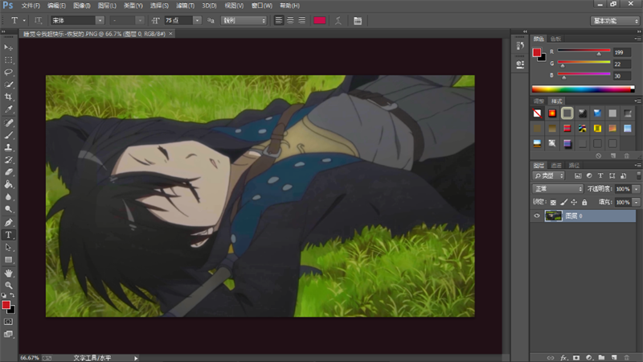
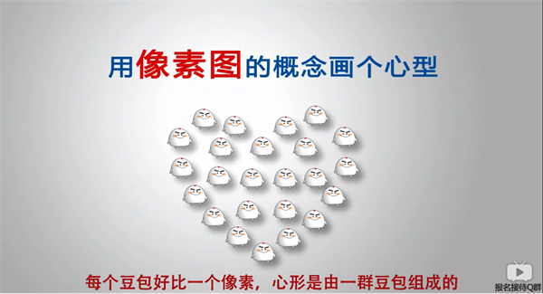
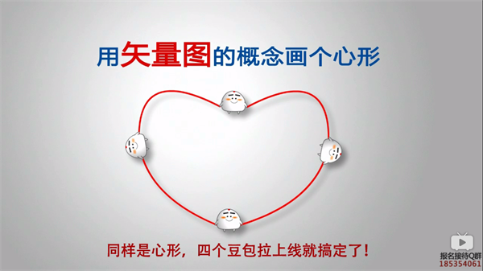
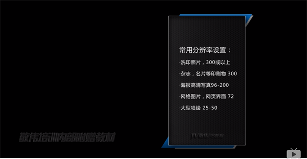
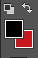
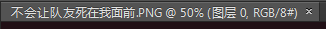
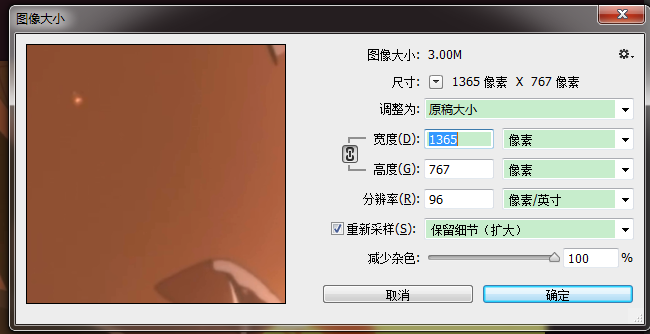

1.五个面板
主界面包括菜单栏、选项栏、工具栏、面板、工作区。
1. 菜单栏：常用命令以及设置一般都可以在菜单栏中找到。
2. 选项栏：是调节工具相关参数的面板，如大小、颜色等，可以在菜单栏的“窗口”里关闭或打开。
3. 工作区：工作区是对作品进行操作的区域。如图：

左下角是工作信息栏，其左半部分可以调整图像实际显示的比例，右半部分可以显示工作区和工具的各种相关信息，左键点击可以显示
详细信息。工作区除图片外的部分称为工作面，工作面的颜色可以用油漆桶工具（Shift+左键）来改变，也可以右键点击来改变。（
油漆桶栏里共有三种工具，可以用Shift+G来切换）
4. 工具栏：工具栏包含我们制图所需要的工具。
5. 快捷键：水平位置滚动条Ctrl和鼠标滚轮，竖直滚动条直接鼠标滚轮即可，放大缩小是Alt鼠标滚轮。另外这三种操作时若同时按
下Shift键，则有加速效果。
6. 除菜单栏外，选项栏、工具栏、面板都是可以随意拖动位置的，任务标签也可以拖动，还可以单独窗口化。
1.新建
1. Ctrl+N打开新建框，其中可以预设图片的一些基本属性，还可以事先设定图像的用途，比如Web或标准纸张A4，胶卷等。
2. 想要查看一个图片的基本信息，可以先复制它，然后在新建的剪贴版里查看它的一些基本信息。
3. 复制图片时，要对图片的像素数据进行复制才能粘贴，对图片文件整体进行复制是不能粘贴的。
2.参数
1. 像素是计算数码影像的一种单位，是最小的图形单元，在屏幕上显示通常就是单个染色点，现在的数码图像通常都是由十万、百万，
甚至千万个像素组成。
2. PS主要是针对像素图形进行编辑和创造和编辑。
3.矢量图：在计算机图形中，还有一种图形叫矢量图。不同于像素图，它没有像素的概念，它是面对对象的图像或绘图图像，在数学上
定义为一系列由线连接的点，具体区别如下图:

所以，像素图放大后可以看到一个个锯齿状的边缘，图像失真，而矢量图不同，由于其是数学算法，可以任意放大缩小，图像质量不会
有任何变化。PS也可对矢量图进行一些编辑。
4. 分辨率：分辨率的单位是Ppi，100Ppi表示一英寸由100个像素点组成。
将一个低分辨率的图像强行改为高分辨率图像并不能提高图像清晰度，因为电脑不可能凭空的为图片增加细节。分辨率越大，图像细节
就越多，相应的文件也越大，计算机要运行其也越缓慢。下图是一些常用的分辨率大小：

5.颜色模式：常用的有RGB和CMYK两种。
RGB是用颜色发光原理设计的色彩模式，用红、绿、蓝三原色的不同程度混合来形成不同颜色。是广泛用于显示屏的一种基本色彩模式
。
CMYK是印刷色彩模式，由青色、品红、黄色、黑色四种油墨混合来表现出各种印刷颜色，因为其是印刷色而不是发光色，所以在显示器
上会显得比RGB黯淡一些。因此电子图像通常选RGB，如果是印刷制作类图像，则选CMYK。
颜色模式的位数常规是8位，一般的显示器和印刷8位就足够了，16位和32位是专业研究用的，一般不涉及。
6. 前景色与背景色：快捷键X切换，快捷键D来恢复默认。下图是具体位置:

右上角相当于X，左上角相当于D，点击最大的两个色块即可设置前后背景色。
7. 编辑-首选项-常规-透明度与色域里可以更改透明区域样式，快捷键是CtrlK。透明网格只会在编辑的时候显示，打印或实际显示都
不会出现。
8. 如果经常会用到某一套参数，可以将其存储为预设，以后可以直接调用使用。
9. 在新建对话框下，按住Alt键不松，可以使取消按钮变为复位按钮，令各项参数恢复至调整前的状态。
10. 标签里包含的信息：标签里可以查看文档的一些信息，如图标签：

其中包含了文档名，@后是图像目前的显示比例，图层数，颜色
模式RGB，8位。
3.修改图像大小
1. 在菜单栏-图像-图像大小里可以多次修改图像大小，快捷键Alt+Ctrl+I。窗口如图:

宽度和高度间锁链状的图案是锁定约束比例，作用是确保图像的长宽比在调整时不会变，左键点击可解除。 重新采样，即像素信息，去掉后就会锁定当前像素，
无法更改。
重新采样右边的下拉菜单里选择的是图像像素的算法。由于图像本身细节的限定，它的像素基本已经是被确定的，强行修改像素并不能使它更清晰，改大不会
有影响，但如果将分辨率改小那图像质量就回不来了。
2. 其它分辨率单位，除Ppi外，常用分辨率单位还有Dpi、Lpi。
Dpi：点分辨率，是衡量输出精度的主要参数，即打印机每英寸产生的油墨点数或显示器每英寸的显像点数，总体来说就是输出设备的精度。打印高Dpi的图像
不仅需要高Ppi，还需要高级的纸张来承受密集的墨点，不然由于油墨点过于密集，低质量的纸张会使油墨粘连泛滥，反而使图片效果很差。对于显示器来说，
就是物理Dpi，它是由设备本身决定的，即制造时每英寸的像素点数，如Iphone4的Dpi是330。
Lpi：线分辨率，是衡量印刷时挂网的一个精度指标，由于在印刷大片的色块会使油墨泛滥，所以采用将图片分成很多个小圆点来避免，这个过程就是挂网。挂
网会用到网屏，网屏就是一个格子图，Lpi描述的是网屏每英寸的网线数。同样的，印刷高Lpi的图片也需要高质量的纸张，印刷时Ppi一般要高于Lpi，最好是
两倍。